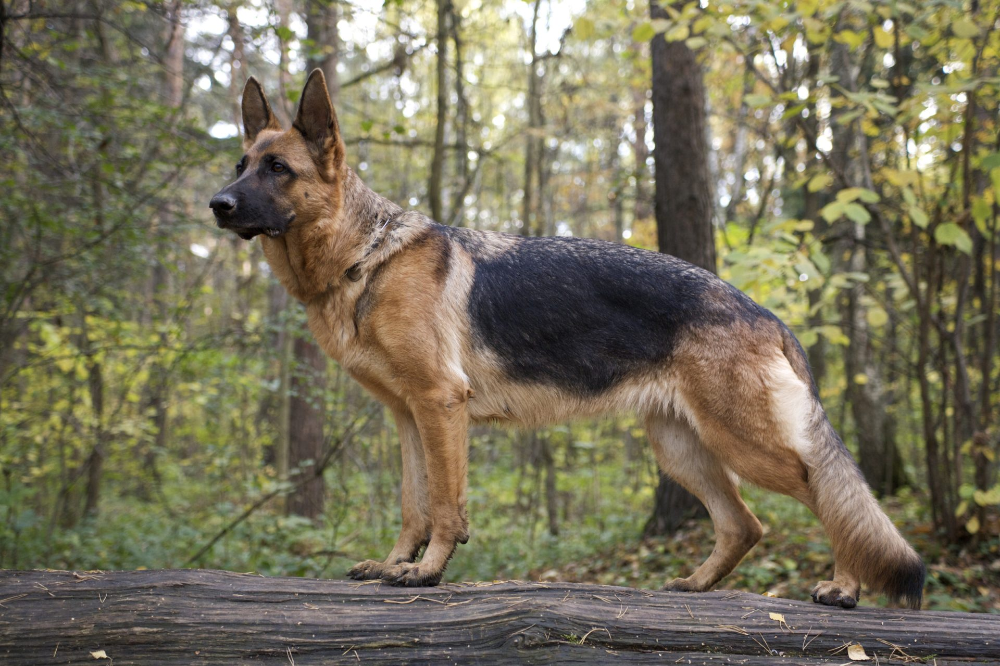

Német Juhász

Ahogy azt a neve is mutatja, a fajta Németországból származik.
Az ónémet juhászkutyából és különböző pásztorkutyákból tenyésztették ki.
Végleges, mai formáját az 1800-as évek körül érte el. Eredetileg a neve Deutscher Schäferhund.
Ónémet juhászkutya
A tenyésztők főleg a szépségre törekedtek, azt akarták elérni, hogy a
juhászkutya leginkább hasonlítson a farkashoz. Ilyen kutyák főleg két helyen voltak találhatóak,
ez a két tartomány Türingia és Württemberg. A német juhászkutya "atyja" Max von Stephanitz (1864-1936)
lovaskapitány volt, aki szinte az életét tette fel a kutyákra. Egy kutyakiállításon látta meg a Hektor
Linksrhein nevű kutyát, melyet átkeresztelt Horand von Grafrathra. 1899. április 22-én von Stephanitz és
barátja, Arthur Meyer megalapították a "Verein für Deutsche Schäferhunde".
Három juhász, két gyártulajdonos, egy építész, egy polgármester, egy kocsmáros és egy bíró is csatlakozott
hozzájuk mint társalapítók.
Jellemzőit
- Ügető típusú kutya, a lábait átlósan viszi, a mozgása térölelő. A hátsó lábaival tudjon legalább a test közepéig lépni, a mellső lábai ugyanolyan hosszúak legyenek.
- Marmagasság: kan: 62,5 cm., szuka: 57,5 cm., az eltérés mindkét nemnél legfeljebb +/- 2,5 cm. lehet.
- Törzs: a hossza a marmagasságnak mintegy a 110-117%-a. A mellkas mély, nem túl széles. A dongás - hordó alakú - mellkas a mozgást korlátozza, mert a könyök kifordul. A has mérsékelten felhúzódó, a hát és az ágyék fejlett, erős, a mar és a far között nem hosszú. A mar hosszú és magas. Az ágyék izmos, széles. A far hosszú és enyhén, körülbelül 23 fokban csapott
- Mancs: kerekded, rövid, jól zárt, a talppárna nagyon kemény, rugalmas, a karom rövid, erős, sötét színű. A farkaskörmöket a néhány napos kölyöknél már el kell távolítani.
- Színezet: leggyakoribb a fekete hát, cser barna alapszín fekete nyereggel vagy aranysárgától a szürkéig terjedő rajzolatokkal, egyszerű szürke (ordas), ordas alapszín világos vagy barna jegyekkel (angolszász nyelvterületen: sable),egyszínű fekete, az utóbbi nagyon ritka, egyszínű fehér, ez főleg az Amerikai Egyesült Államokban és Kanadában gyakori.
- Szőrzet: sima, félhosszú szőrzet ("Stockhaar"): a fedőszőr durva, tömör, a szőrszálak szorosan simulóak. Sima, hosszú szőrzet ("Lang-stockhaar"):az egyenes szálak hosszabbak, ez a szőrzet az időjárással szemben nem olyan ellenálló, mint a félhosszú szőrzet. Hosszú szőrzet ("Langhaar"): aljszőrzet többnyire nincs, az időjárással szemben nem ellenálló, Magyarországon az ilyen szőrzetű kutya nem tenyészthető.
- Testsúly: szuka: 22-32, kan: 30-40 kg.